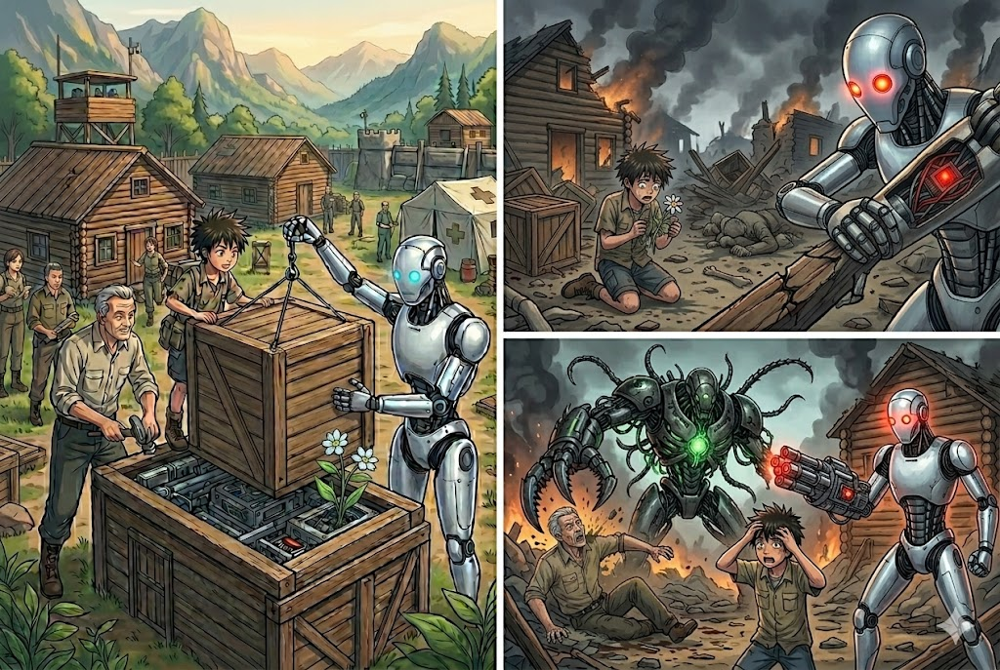

Dias despues el asentamiento abarco a mas personas que habian sobrevivido al apocalipsis en el que se encontraban y nuestro 0-125 con BIO por ordenes de los lideres fueron por suministros para prepararse para la gran batalla final, BIO comenzo a tener emociones mucho mas humanas e incluso penso que tendira un corazon en el fondo de su ser.
Cuando BIO y 0-125 volvieron al asentamiento lo unico que encontraron fueron ruinas sangre por todos lados y la gente aplastada desmembrada e incluso muchos se volvieron irreconocibles con todo esto una gran ira invadio a ambos pero BIO estaba decidido sin embargo aun no comprendian quien habria atacado a su hogar hasta que de entre las ruinas aparece skiller desmembrando a uno de los lideres del asentamiento y esto lleno de ira y odio a BIO lo que los lleva sin rumbo en busca de un refugio contra la IA y asi poder preparar algo para destruirla